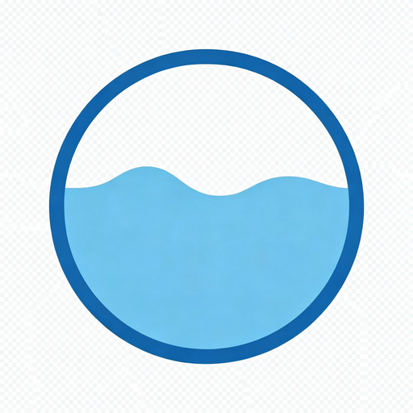

我是「淀粉肠狂热粉」，一个生活在江苏苏州的极简主义实践者、工程师和独立开发者。
来自一段特殊的康复历程——我用对"淀粉肠"的热爱标记了自己从进食障碍中走出的日子。每一根淀粉肠，都是我与自己和解的见证。
| 平台 | 说明 | 链接 |
|---|---|---|
| 豆瓣 | 16年老用户，最真实的我，更新最频繁 | 访问 → |
| 小红书 | 极简、体验、女性成长 | 访问 → |
| 公众号 | 极简、反消费主义、体验 | 访问 → |
| CSDN | 技术播客（生物信息与AI） | 访问 → |
| GitHub | 开源项目与代码片段 | 访问 → |

📱 打开微信 → 首页下拉 → 搜索「七分整理」即可使用
想了解完整开发过程？请看 借助ZCode实现零代码开发微信小程序（含避坑指南）
🔗 找到我：
✅ 欢迎合作：
💬 联系时请说明：你是从哪里找到我的、想聊什么话题，我会更快回复。